Applications
MeteoGSU · sown areas · reference · statistics
Four desktop applications built for variety testing and agronomy. Some of them are used at a branch of the state variety-testing commission and at Krasnoyarsk State Agrarian University. Screenshots come from real work — browse with the arrows, the keyboard or a swipe. The application interface is in Russian.
MeteoGSU
weather data analysis and visualisationA desktop application for weather data tied to trial sites. Data is presented by month and decade across six indicators: average, maximum and minimum temperature, precipitation, snow depth and dew point. It calculates the hydrothermal coefficient, dates when temperature crosses 0, 5, 10 and 15 °C, temperature and precipitation sums, the frost-free period, shows tables and charts, merges rp5 archives and exports results to Excel.
- C#
- WinForms
- Excel
- rp5
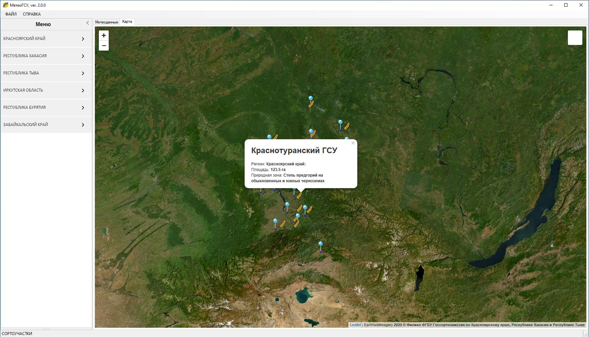
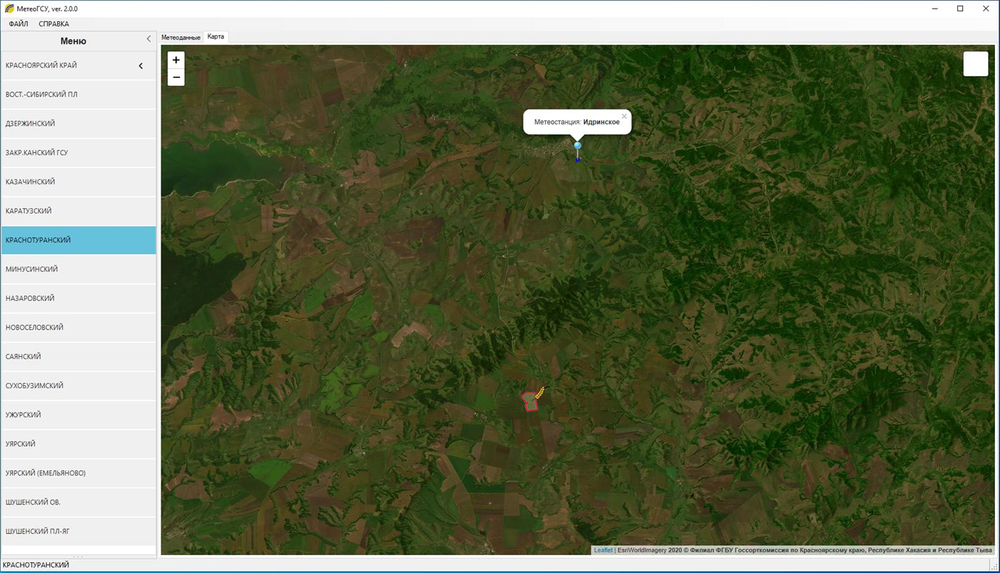
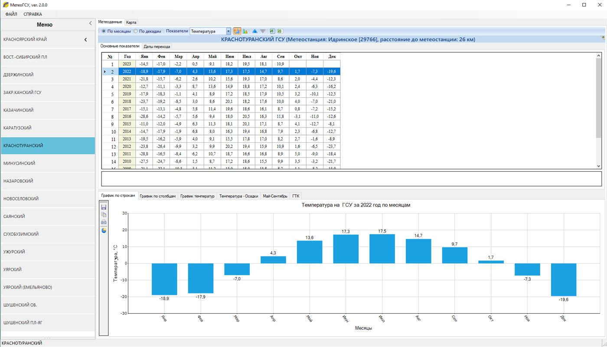
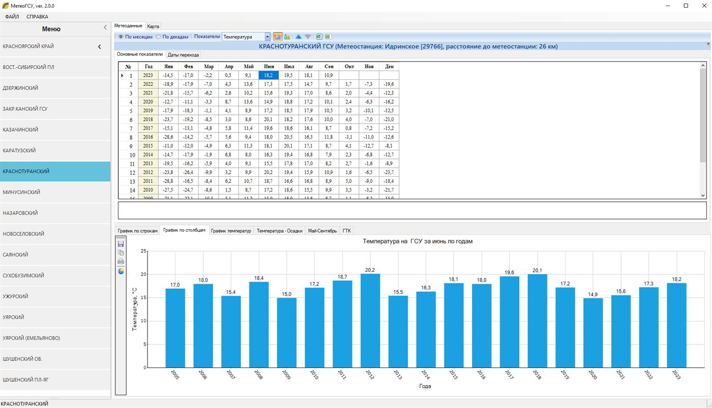
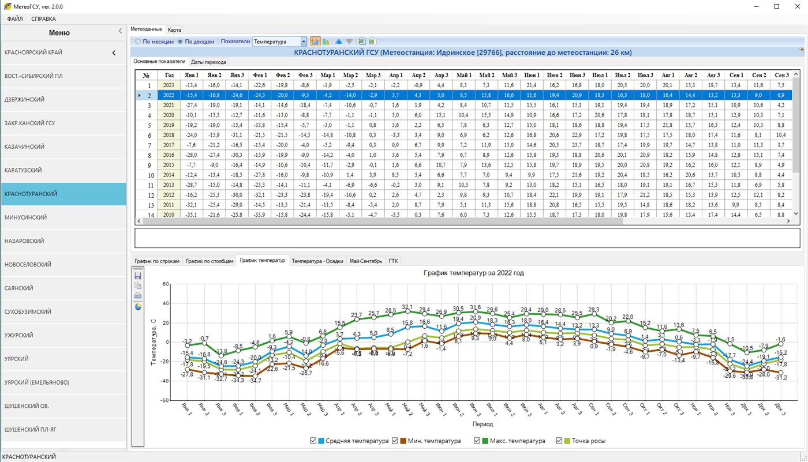
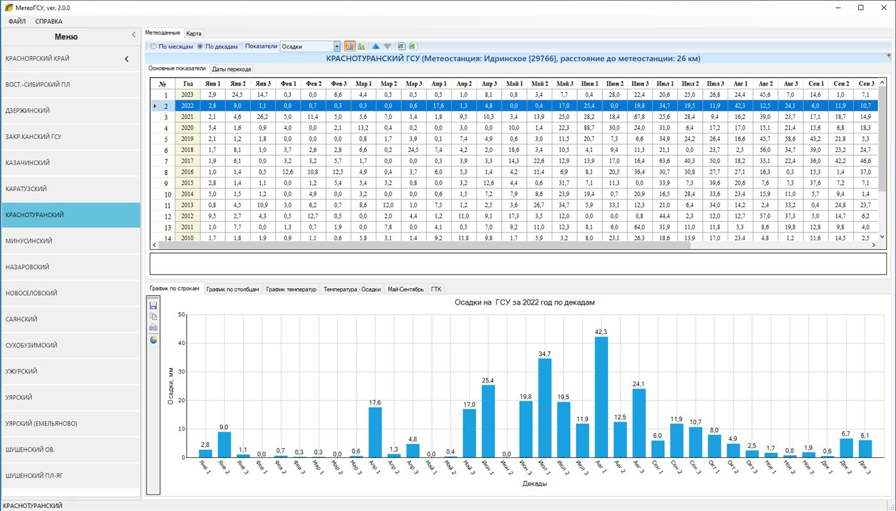
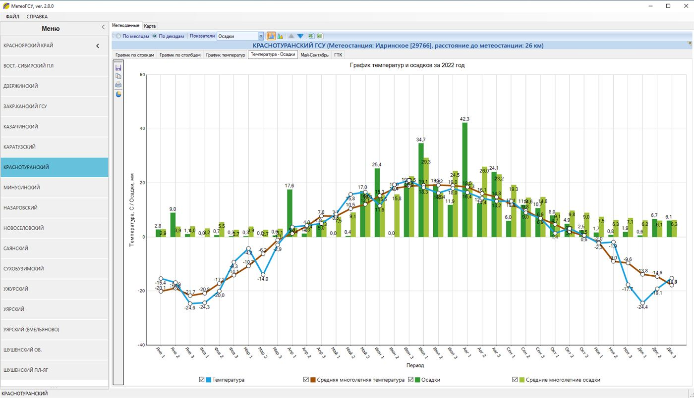
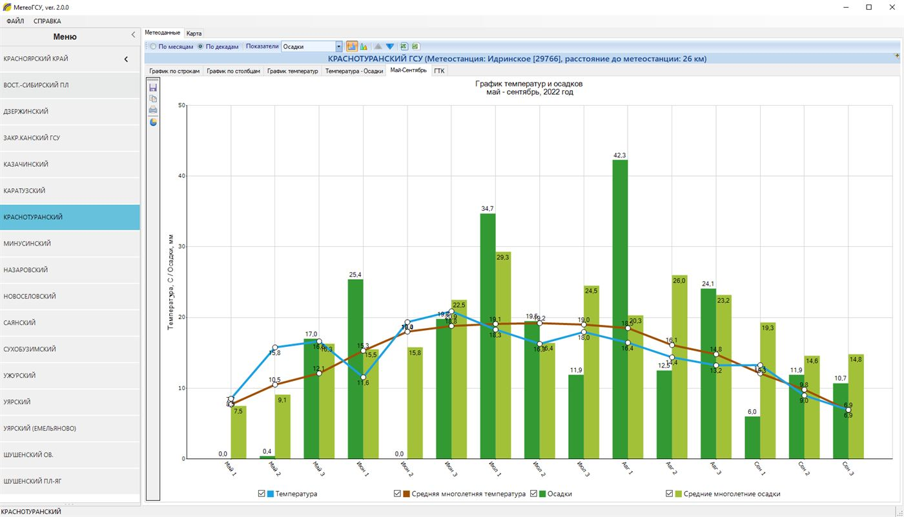
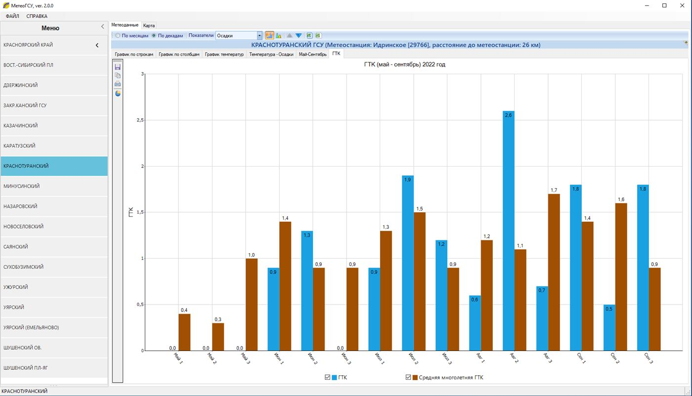
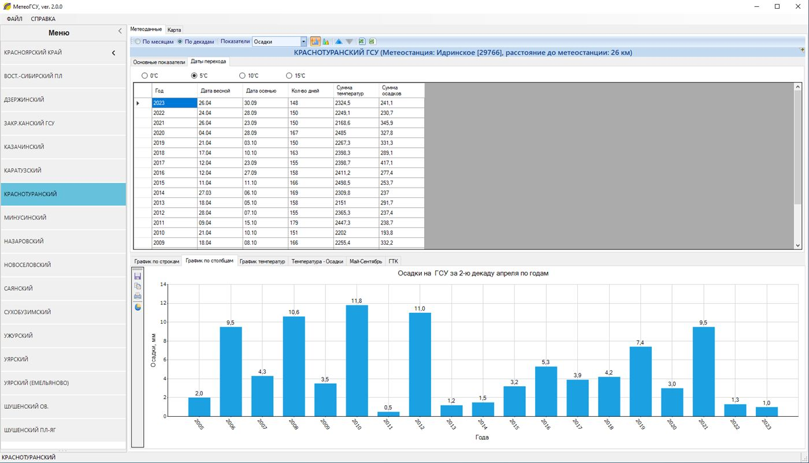

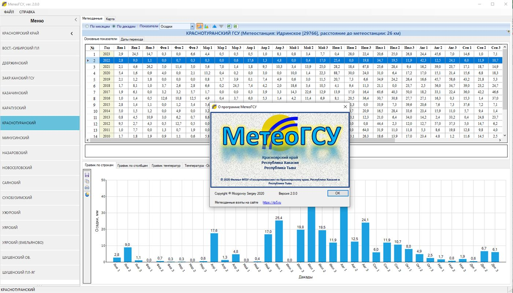
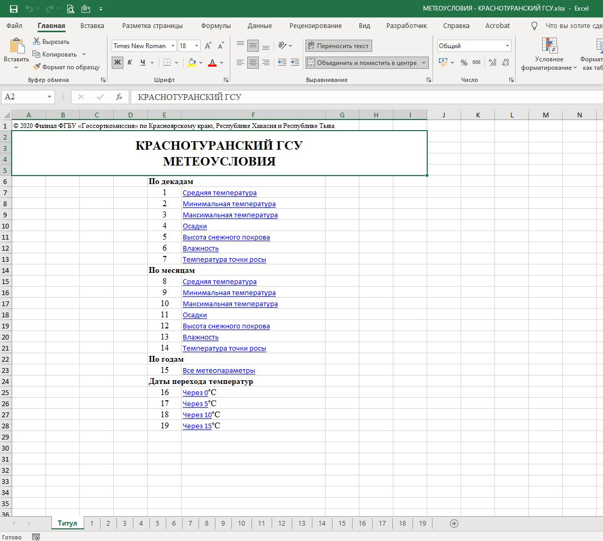
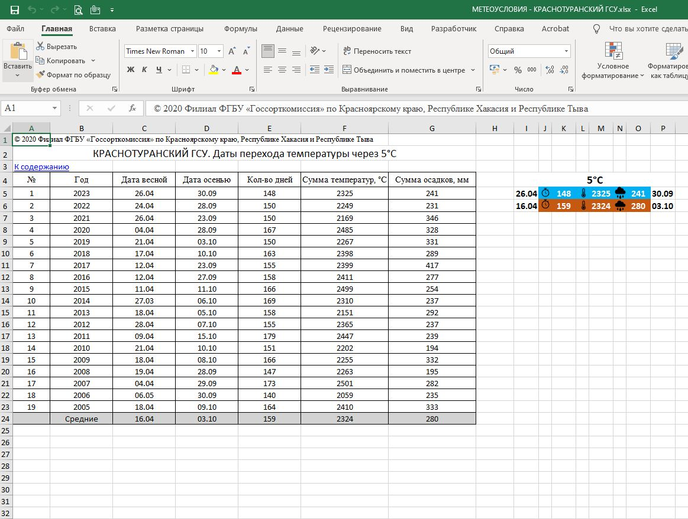
Sown areas
crop area recordsAn application for entering and visualising sown areas of agricultural crops by farm and district, with Excel export and XML storage.
- C#
- WinForms
- XML
- Excel
Variety testing reference
varieties, traits, resultsA reference system for varieties and variety-testing results: variety and trait cards, selections by crop and trial site, reports and Excel export. Data is stored in XML.
- C#
- WinForms
- XML
- Excel
Statistical processing
field trial statisticsStatistical processing of variety-testing data: trial designs, replications, groups, plot areas and moisture; calculations, summary tables and Excel export, with results saved to XML.
- C#
- WinForms
- statistics
- Excel